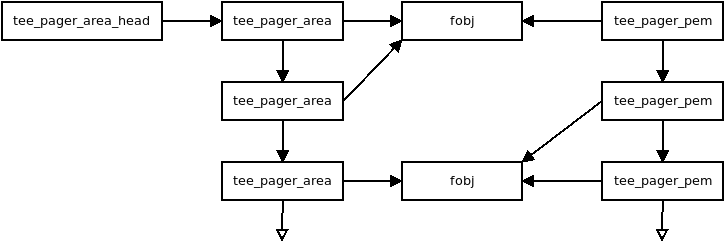

Core
Interrupt handling
This section describes how optee_os handles switches of world execution context based on SMC exceptions and interrupt notifications. Interrupt notifications are IRQ/FIQ exceptions which may also imply switching of world execution context: normal world to secure world, or secure world to normal world.
Use cases of world context switch
This section lists all the cases where OP-TEE OS is involved in world context switches. Optee_os executes in the secure world. World switch is done by the core’s secure monitor level/mode, referred below as the Monitor.
When the normal world invokes the secure world, the normal world executes a SMC instruction. The SMC exception is always trapped by the Monitor. If the related service targets the trusted OS, the Monitor will switch to OP-TEE OS world execution. When the secure world returns to the normal world, OP-TEE OS executes a SMC that is caught by the Monitor which switches back to the normal world.
When a secure interrupt is signaled by the Arm GIC, it shall reach the OP-TEE OS interrupt exception vector. If the secure world is executing, OP-TEE OS will handle interrupt straight from its exception vector. If the normal world is executing when the secure interrupt raises, the Monitor vector must handle the exception and invoke OP-TEE OS to serve the interrupt.
When a non-secure interrupt is signaled by the Arm GIC, it shall reach the normal world interrupt exception vector. If the normal world is executing, it will handle straight the exception from its exception vector. If the secure world is executing when the non-secure interrupt raises, OP-TEE OS will temporarily return back to normal world via the Monitor to let normal world serve the interrupt.
Core exception vectors
Monitor vector is VBAR_EL3 in AArch64 and MVBAR in Armv7-A/AArch32.
Monitor can be reached while normal world or secure world is executing. The
executing secure state is known to the Monitor through the SCR_NS.
Monitor can be reached from a SMC exception, an IRQ or FIQ exception (so-called interrupts) and from asynchronous aborts. Obviously monitor aborts (data, prefetch, undef) are local to the Monitor execution.
The Monitor can be external to OP-TEE OS (case CFG_WITH_ARM_TRUSTED_FW=y).
If not, provides a local secure monitor core/arch/arm/sm. Armv7-A platforms
should use the OP-TEE OS secure monitor. Armv8-A platforms are likely to rely on
an Trusted Firmware A.
When executing outside the Monitor, the system is executing either in the
normal world (SCR_NS=1) or in the secure world (SCR_NS=0). Each world
owns its own exception vector table (state vector):
VBAR_EL2orVBAR_EL1non-secure orVBAR_EL1secure for AArch64.
HVBARorVBARnon-secure orVBARsecure for Armv7-A and AArch32.
All SMC exceptions are trapped in the Monitor vector. IRQ/FIQ exceptions can be trapped either in the Monitor vector or in the state vector of the executing world.
When the normal world is executing, the system is configured to route:
secure interrupts to the Monitor that will forward to OP-TEE OS
non-secure interrupts to the executing world exception vector.
When the secure world is executing, the system is configured to route:
secure and non-secure interrupts to the executing OP-TEE OS exception vector. OP-TEE OS shall forward the non-secure interrupts to the normal world.
Optee_os non-secure interrupts are always trapped in the state vector of the
executing world. This is reflected by a static value of SCR_(IRQ|FIQ).
Native and foreign interrupts
Two types of interrupt are defined from OP-TEE OS point of view.
Native interrupt - The interrupt handled by OP-TEE OS, secure interrupts targetting S-EL1 or secure privileged mode
Foreign interrupt - The interrupt not handled by OP-TEE OS, non-secure interrupts targetting normal world or secure interrupts targetting EL3.
For Arm GICv2 mode, a native interrupt is signalled with a FIQ and a foreign interrupt is signalled with an IRQ. For Arm GICv3 mode, a foreign interrupts is signalled as a FIQ which could be handled by either secure world (aarch32 Monitor mode or aarch64 EL3) or normal world.
Arm GICv3 mode can be enabled by setting CFG_ARM_GICV3=y.
Native interrupts must be securely routed to OP-TEE OS. Foreign interrupts, when
trapped during secure world execution might need to be efficiently routed to
the normal world.
IRQ and FIQ keeps their meaning in normal world so for clarity we will keep using those names in the normal world context.
Normal World invokes OP-TEE OS using SMC
Entering the Secure Monitor
The monitor manages all entries and exits of secure world. To enter secure world from normal world the monitor saves the state of normal world (general purpose registers and system registers which are not banked) and restores the previous state of secure world. Then a return from exception is performed and the restored secure state is resumed. Exit from secure world to normal world is the reverse.
Some general purpose registers are not saved and restored on entry and exit, those are used to pass parameters between secure and normal world (see ARM_DEN0028A_SMC_Calling_Convention for details).
Entry and exit of Trusted OS
On entry and exit of Trusted OS each CPU is uses a separate entry stack and runs with IRQ and FIQ masked. SMCs are categorised in two flavors: fast and yielding.
For fast SMCs, OP-TEE OS will execute on the entry stack with IRQ/FIQ masked until the execution returns to normal world.
For yielding SMCs, OP-TEE OS will at some point execute the requested service with interrupts unmasked. In order to handle interrupts, mainly forwarding of foreign interrupts, OP-TEE OS assigns a trusted thread (core/arch/arm/kernel/thread.c) to the SMC request. The trusted thread stores the execution context of the requested service. This context can be suspended and resumed as the requested service executes and is interrupted. The trusted thread is released only once the service execution returns with a completion status.
For yielding SMCs, OP-TEE OS allocates or resumes a trusted thread then unmasks the IRQ and FIQ lines. When the OP-TEE OS needs to invoke the normal world from a foreign interrupt or a remote service call, OP-TEE OS masks IRQ and FIQ and suspends the trusted thread. When suspending, OP-TEE OS gets back to the entry stack.
Both fast and yielding SMCs end on the entry stack with IRQ and FIQ masked and OP-TEE OS invokes the Monitor through a SMC to return to the normal world.
![participant "Normal World" as nwd
participant "Secure Monitor" as smon
participant "OP-TEE OS entry" as entry
participant "OP-TEE OS" as optee
== IRQ and FIQ unmasked ==
nwd -> smon : smc: TEE_FUNC_INVOKE
smon -> smon : Save non-secure context
smon -> smon : Restore secure context
smon --> entry : eret: TEE_FUNC_INVOKE
entry -> entry : assign thread
entry -> optee : TEE_FUNC_INVOKE
== IRQ and FIQ unmasked ==
optee -> optee : process
== IRQ and FIQ masked ==
optee --> entry : SMC_CALL_RETURN
entry -> smon : smc: SMC_CALL_RETURN
smon -> smon : Save secure context
smon -> smon : Restore non-secure context
== IRQ and FIQ unmasked ==
smon --> nwd : eret: return](../_images/plantuml-5bee5229f56c37a1be37c0f13b2a6fafebda4477.png)
SMC entry to secure world
Deliver non-secure interrupts to Normal World
Forward a Foreign Interrupt from Secure World to Normal World
When a foreign interrupt is received in secure world as an IRQ or FIQ exception then secure world:
Saves trusted thread context (entire state of all processor modes for Armv7-A)
Masks all interrupts (IRQ and FIQ)
Switches to entry stack
Issues an SMC with a value to indicates to normal world that an IRQ has been detected and last SMC call should be continued
The monitor restores normal world context with a return code indicating that an IRQ is about to be delivered. Normal world issues a new SMC indicating that it should continue last SMC.
The monitor restores secure world context which locates the previously saved context and checks that it is a return from a foreign interrupt that is requested before restoring the context and lets the secure world foreign interrupt handler return from exception where the execution would be resumed.
Note that the monitor itself does not know or care that it has just forwarded a foreign interrupt to normal world. The bookkeeping is done in the trusted thread handling in OP-TEE OS. Normal world is responsible to decide when the secure world thread should resume execution (for details, see Thread handling).
![participant "Normal World" as nwd
participant "Secure Monitor" as smon
participant "OP-TEE OS entry" as entry
participant "OP-TEE OS" as optee
== IRQ and FIQ unmasked ==
optee -> optee : process
== IRQ and FIQ unmasked,\nForeign interrupt received ==
optee -> optee : suspend thread
optee -> entry : forward foreign interrupt
entry -> smon : smc: forward foreign interrupt
smon -> smon: Save secure context
smon -> smon: Restore non-secure context
== IRQ and FIQ unmasked ==
smon --> nwd : eret: IRQ forwarded
== FIQ unmasked, IRQ received ==
nwd -> nwd : process IRQ
== IRQ and FIQ unmasked ==
nwd -> smon : smc: return from IRQ
== IRQ and FIQ masked ==
smon -> smon : Save non-secure context
smon -> smon : Restore secure context
smon --> entry : eret: return from foreign interrupt
entry -> entry : find thread
entry --> optee : resume execution
== IRQ and FIQ unmasked ==
optee -> optee : process](../_images/plantuml-f72c516f5205da2f7ad2483b7cbeaebf1faf462a.png)
Foreign interrupt received in secure world and forwarded to normal world
Deliver a foreign interrupt to normal world when ``SCR_NS`` is set
Since SCR_IRQ is cleared, an IRQ will be delivered using the exception
vector (VBAR) in the normal world. The IRQ is received as any other
exception by normal world, the monitor and the OP-TEE OS are not involved
at all.
Deliver secure interrupts to Secure World
A secure (foreign) interrupt can be received during two different states,
either in normal world (SCR_NS is set) or in secure world (SCR_NS
is cleared). When the secure monitor is active (Armv8-A EL3 or Armv7-A
Monitor mode) FIQ and IRQ are masked. FIQ reception in the two different
states is described below.
Deliver secure interrupt to secure world when SCR_NS is set
When the monitor traps a secure interrupt it:
Saves normal world context and restores secure world context from last secure world exit (which will have IRQ and FIQ blocked)
Clears
SCR_FIQwhen clearingSCR_NSDoes a return from exception into OP-TEE OS via the secure interrupt entry point
OP-TEE OS handles the native interrupt directly in the entry point
OP-TEE OS issues an SMC to return to normal world
The monitor saves the secure world context and restores the normal world context
Does a return from exception into the restored context
![participant "Normal World" as nwd
participant "Secure Monitor" as smon
participant "OP-TEE OS entry" as entry
participant "OP-TEE OS" as optee
== IRQ and FIQ unmasked ==
== Running in non-secure world (SCR_NS set) ==
nwd -> nwd : process
== IRQ and FIQ masked,\nSecure interrupt received ==
smon -> smon : Save non-secure context
smon -> smon : Restore secure context
smon --> entry : eret: native interrupt entry point
entry -> entry: process received native interrupt
entry -> smon: smc: return
smon -> smon : Save secure context
smon -> smon : Restore non-secure context
smon --> nwd : eret: return to Normal world
== IRQ and FIQ unmasked ==
nwd -> nwd : process](../_images/plantuml-c62cc6d6611a73cdfc9222e0927c4bde8a8b8f7d.png)
Secure interrupt received when SCR_NS is set
Deliver FIQ to secure world when SCR_NS is cleared
![participant "Normal World" as nwd
participant "Secure Monitor" as smon
participant "OP-TEE OS entry" as entry
participant "OP-TEE OS" as optee
== IRQ and FIQ unmasked ==
optee -> optee : process
== IRQ and FIQ unmasked,\nForeign interrupt received ==
optee -> optee : suspend thread
optee -> entry : forward foreign interrupt
entry -> smon : smc: forward foreign interrupt
smon -> smon: Save secure context
smon -> smon: Restore non-secure context
== IRQ and FIQ unmasked ==
smon --> nwd : eret: IRQ forwarded
== FIQ unmasked, IRQ received ==
nwd -> nwd : process IRQ
== IRQ and FIQ masked,\nSecure interrupt received ==
smon -> smon : Save non-secure context
smon -> smon : Restore secure context
smon --> entry : eret: native interrupt entry point
entry -> entry : process received native interrupt
entry -> smon: smc: return
smon -> smon : Save secure context
smon -> smon : Restore non-secure context
smon --> nwd : eret: return to Normal world
== FIQ unmasked\nIRQ still being processed ==
nwd -> nwd : process IRQ
== IRQ and FIQ unmasked ==
nwd -> smon : smc: return from IRQ
== IRQ and FIQ masked ==
smon -> smon : Save non-secure context
smon -> smon : Restore secure context
smon --> entry : eret: return from foreign interrupt
entry -> entry : find thread
entry --> optee : resume execution
== IRQ and FIQ unmasked ==
optee -> optee : process](../_images/plantuml-4a75ac29c93ea38b036eb83838822464d9ea571d.png)
FIQ received while processing an IRQ forwarded from secure world
Trusted thread scheduling
Trusted thread for standard services
OP-TEE yielding services are carried through standard SMC. Execution of these services can be interrupted by foreign interrupts. To suspend and restore the service execution, optee_os assigns a trusted thread at yielding SMC entry.
The trusted thread terminates when optee_os returns to the normal world with a service completion status.
A trusted thread execution can be interrupted by a native interrupt. In this case the native interrupt is handled by the interrupt exception handlers and once served, optee_os returns to the execution trusted thread.
A trusted thread execution can be interrupted by a foreign interrupt. In this case, optee_os suspends the trusted thread and invokes the normal world through the Monitor (optee_os so-called RPC services). The trusted threads will resume only once normal world invokes the optee_os with the RPC service status.
A trusted thread execution can lead optee_os to invoke a service in normal world: access a file, get the REE current time, etc. The trusted thread is first suspended then resumed during remote service execution.
Scheduling considerations
When a trusted thread is interrupted by a foreign interrupt and when optee_os invokes a normal world service, the normal world gets the opportunity to reschedule the running applications. The trusted thread will resume only once the client application is scheduled back. Thus, a trusted thread execution follows the scheduling of the normal world caller context.
Optee_os does not implement any thread scheduling. Each trusted thread is expected to track a service that is invoked from the normal world and should return to it with an execution status.
The OP-TEE Linux driver (as implemented in drivers/tee/optee since Linux kernel 4.12) is designed so that the Linux thread invoking OP-TEE gets assigned a trusted thread on TEE side. The execution of the trusted thread is tied to the execution of the caller Linux thread which is under the Linux kernel scheduling decision. This means trusted threads are scheduled by the Linux kernel.
Trusted thread constraints
TEE core handles a static number of trusted threads, see CFG_NUM_THREADS.
Trusted threads are expensive on memory constrained system, mainly because of the execution stack size.
On SMP systems, optee_os can execute several trusted threads in parallel if the normal world supports scheduling of processes. Even on UP systems, supporting several trusted threads in optee_os helps normal world scheduler to be efficient.
Core handlers for native interrupts
OP-TEE core provides methods for device drivers to setup and register handler functions for native interrupt controller drivers (see:ref:native_foreign_irqs). Interrupt handlers can be nested as when an interrupt controller exposes interrupts which signaling is multiplexed on an interrupt controlled by a parent interrupt controller.
Interrupt controllers are represented by an instance of struct itr_chip.
An interrupt controller exposes a given number of interrupts, each identified
by an index from 0 to N-1 where N is the total number of interrupts exposed
by that controller. In the literature, an interrupt index identifier
is called interrupt number.
Interrupt management API functions
Interrupt management resources are declared in header file interrupt.h. Interrupt consumers main API functions are:
- interrupt_enable() and interrupt_disable() to respectively
enable or disable an interrupt.
- interrupt_mask() and interrupt_unmask() to respectively mask
or unmask an interrupt. Masking of an enabled interrupt temporarily
disables the interrupt while unmasking enables a previously masked
interrupt. interrupt_mask() and interrupt_unmask() are
allowed to be called from an interrupt context, but
interrupt_enable() and interrupt_disable() not so.
- interrupt_configure() to configure an interrupt detection mode
and priority.
- -
interrupt_add_handler()to configure an interrupt and register an interrupt handler function, see below.
interrupt_remove_handler()to unregister an interrupt handler function from an interrupt.
Interrupt controller drivers
An interrupt controller instance, named chip (struct itr_chip) defines
operation function handlers for management of the interrupt(s) it controls.
An interrupt chip driver must provide operation handler functions .add,
.mask, .unmask, .enable and .disable. There are other
operation handler functions that are optional, as for example .rasie_pi,
.raise_sgi and .set_priority.
An interrupt chip driver registers the controller instance with API
function itr_chip_init(). The driver calls the registered interrupt
consumer(s) handler(s) with API function interrupt_call_handlers().
CPU main interrupt controller driver
The CPU interrupt controller (e.g. a GIC instance on Arm architecture CPUs)
is called the main interrupt controller. Its driver must register as main
controller using API function interrupt_main_init(). The function is
in charge of calling itr_chip_init() for that chip instance.
Interrupt consumer drivers can get a reference to the main interrupt
controller with the API function interrupt_get_main_chip().
Interrupt handlers
Interrupt handler functions are callback functions registered by interrupt
consumer drivers that core shall call when the related interrupt occurs.
Structure struct itr_handler references a handler. It contains the
handler function entry point, the interrupt number, the interrupt controller
device and a few more parameters.
An interrupt handler function return value is of type enum itr_return.
It shall return ITRR_HANDLED when the interrupt is served and
ITRR_NONE when the interrupt cannot be served.
The interrupt handler runs in an interrupt context rather than a thread context. When this occurs, all other interrupts are masked, necessitating fast execution of the interrupt handler to avoid delaying or missing out on other interrupts. When an interrupt occurs that requires the completion of long-running operations, the interrupt handler should request the OP-TEE bottom half thread (see Notifications) to execute those operations.
API function interrupt_add_handler(),
interrupt_add_handler_with_chip() and interrupt_alloc_add_handler()
configure and register a handler function to a given interrupt.
API function interrupt_remove_handler() and
interrupt_remove_free_handler() unregister a registered handler.
Interrupt consumer driver
A typical implementation of a driver consuming an interrupt includes retrieving of the interrupt resource (interrupt controller and interrupt number in that controller), configuring the interrupt, registering a handler for the interrupt and enabling/disabling the interrupt.
For example, the dummy driver below prints a debug trace when the related interrupt occurs:
static struct itr_handler *foo_int1_handler;
static struct foo_int1_data = {
/* field with some interrupt handler private data */
};
static enum itr_return foo_it_handler_fn(struct itr_handler *h)
{
foo_acknowledge_interrupt(h->it);.
DMSG("Interrupt FOO%u served", h->it);
return ITRR_HANDLED;
}
static TEE_Result foo_initialization(void)
{
TEE_Result res = TEE_ERROR_GENERIC;
res = interrupt_alloc_add_handler(itr_core_get(),
GIC_INT_FOO,
foo_it_handler_fn,
ITRF_TRIGGER_LEVEL,
&foo_int1_data,
&foo_int1_handler);
if (res)
return res;
interrupt_enable(itr_chip, it_num);
return TEE_SUCCESS;
}
static void foo_release(void)
{
if (foo_int1_handler) {
interrupt_disable(foo_int1_handler->chip,
foo_int1_handler->it);
interrupt_remove_free_handler(&foo_int1_handler);
}
}
Notifications
There are two kinds of notifications that secure world can use to make normal world aware of some event.
Synchronous notifications delivered with
OPTEE_RPC_CMD_NOTIFICATIONusing theOPTEE_RPC_NOTIFICATION_SENDparameter.Asynchronous notifications delivered with a combination of a non-secure interrupt and a fast call from the non-secure interrupt handler.
Secure world can wait in normal for a notification to arrive. This allows the calling thread to sleep instead of spinning when waiting for something. This happens for instance when a thread waits for a mutex to become available.
Synchronous notifications are limited by depending on RPC for delivery, this is only usable from a normal thread context. Secure interrupt handler or other atomic context cannot use synchronous notifications due to this.
Asynchrononous notifications uses a platform specific way of triggering a
non-secure interrupt. This is done with itr_raise_pi() in a way
suitable for a secure interrupt handler or another atomic context. This is
useful when using a top half and bottom half kind of design in a device
driver. The top half is done in the secure interrupt handler which then
triggers normal world to make a yielding call into secure world to do the
bottom half processing.
![participant "OP-TEE OS\ninterrupt handler" as sec_itr
participant "OP-TEE OS\nfastcall handler" as fastcall
participant "Interrupt\ncontroller" as itc
participant "Normal World\ninterrupt handler" as ns_itr
participant "Normal World\nthread" as ns_thr
participant "OP-TEE OS\nyielding do bottom half" as bottom
itc --> sec_itr : Secure interrupt
activate sec_itr
sec_itr -> sec_itr : Top half processing
sec_itr --> itc : Trigger NS interrupt
itc --> ns_itr : Non-secure interrupt
activate ns_itr
sec_itr --> itc: End of interrupt
deactivate sec_itr
ns_itr -> fastcall ++: Get notification
fastcall -> ns_itr --: Return notification
alt Do bottom half notifcation
ns_itr --> ns_thr : Wake thread
activate ns_thr
ns_itr --> itc: End of interrupt
deactivate ns_itr
ns_thr -> bottom ++: Do bottom half
bottom -> bottom : Process bottom half
bottom -> ns_thr --: Done
deactivate ns_thr
else Some other notification
end](../_images/plantuml-bba590dbf6ac8c44d61e1ab82221b43bd447acca.png)
Top half, bottom half example
![participant "OP-TEE OS\nthread 1" as sec_thr1
participant "Normal World\nthread 1" as ns_thr1
participant "OP-TEE OS\nthread 2" as sec_thr2
participant "Normal World\nthread 2" as ns_thr2
activate ns_thr1
ns_thr1 -> sec_thr1 ++ : Invoke
sec_thr1 -> sec_thr1 : Lock mutex
sec_thr1 -> sec_thr1 : Process
activate ns_thr2
ns_thr2 -> sec_thr2 ++: Invoke
sec_thr2 -> ns_thr2 -- : RPC: Wait for mutex
ns_thr2 -> ns_thr2 : Wait for notifcation
deactivate ns_thr2
sec_thr1 -> sec_thr1 : Unlock mutex
sec_thr1 -> ns_thr1 -- : RPC: Notify mutex unlocked
ns_thr1 --> ns_thr2 : Notify mutex unlocked
activate ns_thr2
ns_thr1 -> sec_thr1 ++ : Return from RPC
sec_thr1 -> sec_thr1 : Process
sec_thr1 -> ns_thr1 -- : Return from Invoke
deactivate ns_thr1
ns_thr2 -> sec_thr2 ++ : Return from RPC
sec_thr2 -> sec_thr2 : Lock mutex
sec_thr2 -> sec_thr2 : Process
sec_thr2 -> sec_thr2 : Unlock mutex
sec_thr2 -> sec_thr2 : Process
sec_thr2 -> ns_thr2 -- : Return from Invoke
deactivate ns_thr2](../_images/plantuml-0bf1c22f73d83d107d75a01836dff61c25ee8f50.png)
Synchronous example
Notifications are identified with a value, allocated as:
- 0 - 63
Mixed asynchronous and synchronous range
- 64 - Max
Synchronous only range
If the Max value is smaller than 63, then there’s only the mixed range.
If asynchronous notifications are enabled then is the value 0 reserved for
signalling the a driver need a bottom half call, that is the yielding call
OPTEE_MSG_CMD_DO_BOTTOM_HALF.
The rest of the asynchronous notification values are managed with two
functions notif_alloc_async_value() and notif_free_async_value().
Memory objects
A memory object, MOBJ, describes a piece of memory. The interface provided is mostly abstract when it comes to using the MOBJ to populate translation tables etc. There are different kinds of MOBJs describing:
- Physically contiguous memory
created with
mobj_phys_alloc(...).
- Virtual memory
one instance with the name
mobj_virtavailable.spans the entire virtual address space.
- Physically contiguous memory allocated from a
tee_mm_pool_t *
created with
mobj_mm_alloc(...).
- Paged memory
created with
mobj_paged_alloc(...).only contains the supplied size and makes
mobj_is_paged(...)return true if supplied as argument.
- Secure copy paged shared memory
created with
mobj_seccpy_shm_alloc(...).makes
mobj_is_paged(...)andmobj_is_secure(...)return true if supplied as argument.
MMU
Translation tables
OP-TEE supports two translation table formats:
Short-descriptor translation table format, available on ARMv7-A and ARMv8-A AArch32
Long-descriptor translation format, available on ARMv7-A with LPAE and ARMv8-A
ARMv7-A without LPAE (Large Physical Address Extension) must use the short-descriptor translation table format only. ARMv8-A AArch64 must use the long-descriptor translation format only.
Translation table format is a static build time configuration option,
CFG_WITH_LPAE. The design around the translation table handling has
been centered around these factors:
Share translation tables between CPUs when possible to save memory and simplify paging
Support non-global CPU specific mappings to allow executing different TAs in parallel.
Short-descriptor translation table format
Several L1 translation tables are used, one large spanning 4 GiB and two or more small tables spanning 32 MiB. The large translation table handles kernel mode mapping and matches all addresses not covered by the small translation tables. The small translation tables are assigned per thread and covers the mapping of the virtual memory space for one TA context.
Memory space between small and large translation table is configured by TTBCR. TTBR1 always points to the large translation table. TTBR0 points to the a small translation table when user mapping is active and to the large translation table when no user mapping is currently active. For details about registers etc, please refer to a Technical Reference Manual for your architecture, for example Cortex-A53 TRM.
The translation tables has certain alignment constraints, the alignment (of the physical address) has to be the same as the size of the translation table. The translation tables are statically allocated to avoid fragmentation of memory due to the alignment constraints.
Each thread has one small L1 translation table of its own. Each TA context has a compact representation of its L1 translation table. The compact representation is used to initialize the thread specific L1 translation table when the TA context is activated.
![digraph xlat_table {
graph [
rankdir = "LR"
];
node [
shape = "ellipse"
];
edge [
];
"node_ttb" [
label = "<f0> TTBR0 | <f1> TTBR1"
shape = "record"
];
"node_large_l1" [
label = "<f0> Large L1\nSpans 4 GiB"
shape = "record"
];
"node_small_l1" [
label = "Small L1\nSpans 32 MiB\nper entry | <f0> 0 | <f1> 1 | ... | <fn> n"
shape = "record"
];
"node_ttb":f0 -> "node_small_l1":f0 [ label = "Thread 0 ctx active" ];
"node_ttb":f0 -> "node_small_l1":f1 [ label = "Thread 1 ctx active" ];
"node_ttb":f0 -> "node_small_l1":fn [ label = "Thread n ctx active" ];
"node_ttb":f0 -> "node_large_l1" [ label="No active ctx" ];
"node_ttb":f1 -> "node_large_l1";
}](../_images/graphviz-739f350637ba1d2bdbe873e948109e1e08b4af05.png)
Long-descriptor translation table format
Each CPU is assigned a L1 translation table which is programmed into
Translation Table Base Register 0 (TTBR0 or TTBR0_EL1 as
appropriate).
L1 and L2 translation tables are statically allocated and initialized at boot. Normally there is only one shared L2 table, but with ASLR enabled the virtual address space used for the shared mapping may need to use two tables. An unused entry in the L1 table is selected to point to the per thread L2 table. With ASLR configured this means that different per thread entry may be selected each time the system boots. Note that this entry will only point to a table when the per thread mapping is activated.
The L2 translation tables in their turn point to L3 tables which use the small page granularity of 4 KiB. The shared mappings has the L3 tables initialized too at boot, but the per thread L3 tables are dynamic and are only assigned when the mapping is activated.
![digraph xlat_table {
graph [ rankdir = "LR" ];
node [ ];
edge [ ];
"ttbr0" [
label = "TTBR0"
shape = "record"
];
"node_l1" [
label = "<h> Per CPU L1 table | <f0> 0 | <f1> 1 | <f2> 2 | <f3> 3"
shape = "record"
];
"shared_l2_n" [
label = "<h> Shared L2 table n | 0 | ... | 512"
shape = "record"
]
"shared_l2_m" [
label = "<h> Shared L2 table m | 0 | ... | 512"
shape = "record"
]
"per_thread_l2" [
label = "<h> Per thread L2 table | 0 | ... | 512"
shape = "record"
]
"ttbr0" -> "node_l1":h;
"node_l1":f2 -> "shared_l2_n":h;
"node_l1":f3 -> "shared_l2_m":h;
"node_l1":f0 -> "per_thread_l2":h;
}](../_images/graphviz-4ea1ca84657463217d750c51fe6d1cd1acf3d611.png)
Example translation table setup with 4GiB virtual address space with L3 tables excluded
Page table cache
Page tables used to map TAs are managed with the page table cache. When the
context of a TA is unmapped, all its page tables are released with a call
to pgt_free(). All page tables needed when mapping a TA are allocated
using pgt_alloc().
A fixed maximum number of translation tables are available in a pool. One
thread may execute a TA which needs all or almost all tables. This can
block TAs from being executed by other threads. To ensure that all TAs
eventually will be permitted to execute pgt_alloc() temporarily frees
eventual tables allocated before waiting for tables to become available.
The page table cache behaves differently depending on configuration options.
Without paging (CFG_WITH_PAGER=n)
This is the easiest configuration. All page tables are statically allocated
in the .nozi.pgt_cache section. pgt_alloc() allocates tables from the
free-list and pgt_free() returns the tables directly to the free-list.
With paging enabled (CFG_WITH_PAGER=y)
Page tables are allocated as zero initialized locked pages during boot
using tee_pager_alloc(). Locked pages are populated with physical pages
on demand from the pager. The physical page can be released when not needed
any longer with tee_pager_release_phys().
With CFG_WITH_LPAE=y each translation table has the same size as a
physical page which makes it easy to release the physical page when the
translation table isn’t needed any longer. With the short-descriptor table
format (CFG_WITH_LPAE=n) it becomes more complicated as four
translation tables are stored in each page. Additional bookkeeping is used
to tell when the page for used by four separate translation tables can be
released.
With paging of user TA enabled (CFG_PAGED_USER_TA=y)
With paging of user TAs enabled a cache of recently used translation tables
is used. This can save us from a storm of page faults when restoring the
mappings of a recently unmapped TA. Which translation tables should be
cached is indicated with reference counting by the pager on used tables.
When a table needs to be forcefully freed
tee_pager_pgt_save_and_release_entries() is called to let the pager
know that the table can’t be used any longer.
When a mapping in a TA is removed it also needs to be purged from cached
tables with pgt_flush_ctx_range() to prevent old mappings from being
accidentally reused.
Switching to user mode
This section only applies with following configuration flags:
CFG_WITH_LPAE=n
CFG_CORE_UNMAP_CORE_AT_EL0=y
When switching to user mode only a minimal kernel mode mapping is kept. This is achieved by selecting a zeroed out big L1 translation in TTBR1 when transitioning to user mode. When returning back to kernel mode the original L1 translation table is restored in TTBR1.
Switching to normal world
When switching to normal world either via a foreign interrupt (see Native and foreign interrupts or RPC there is a chance that secure world will resume execution on a different CPU. This means that the new CPU need to be configured with the context of the currently active TA. This is solved by always setting the TA context in the CPU when resuming execution.
Pager
OP-TEE currently requires >256 KiB RAM for OP-TEE kernel memory. This is not a problem if OP-TEE uses TrustZone protected DDR, but for security reasons OP-TEE may need to use TrustZone protected SRAM instead. The amount of available SRAM varies between platforms, from just a few KiB up to over 512 KiB. Platforms with just a few KiB of SRAM cannot be expected to be able to run a complete TEE solution in SRAM. But those with 128 to 256 KiB of SRAM can be expected to have a capable TEE solution in SRAM. The pager provides a solution to this by demand paging parts of OP-TEE using virtual memory.
Secure memory
TrustZone protected SRAM is generally considered more secure than TrustZone protected DRAM as there is usually more attack vectors on DRAM. The attack vectors are hardware dependent and can be different for different platforms.
Backing store
TrustZone protected DRAM or in some cases non-secure DRAM is used as backing store. The data in the backing store is integrity protected with one hash (SHA-256) per page (4KiB). Readonly pages are not encrypted since the OP-TEE binary itself is not encrypted.
Partitioning of memory
The code that handles demand paging must always be available as it would otherwise lead to deadlock. The virtual memory is partitioned as:
Type
Sections
unpaged
init / paged
paged
demand alloc
Where nozi stands for “not zero initialized”, this section contains entry
stacks (thread stack when TEE pager is not enabled) and translation tables (TEE
pager cached translation table when the pager is enabled and LPAE MMU is used).
The init area is available when OP-TEE is initializing and contains
everything that is needed to initialize the pager. After the pager has been
initialized this area will be used for demand paged instead.
The demand alloc area is a special area where the pages are allocated and
removed from the pager on demand. Those pages are returned when OP-TEE does not
need them any longer. The thread stacks currently belongs this area. This means
that when a stack is not used the physical pages can be used by the pager for
better performance.
The technique to gather code in the different area is based on compiling all
functions and data into separate sections. The unpaged text and rodata is then
gathered by linking all object files with --gc-sections to eliminate
sections that are outside the dependency graph of the entry functions for
unpaged functions. A script analyzes this ELF file and generates the bits of the
final link script. The process is repeated for init text and rodata. What is
not “unpaged” or “init” becomes “paged”.
Partitioning of the binary
Note
The struct definitions provided in this section are explicitly covered by the following dual license:
SPDX-License-Identifier: (BSD-2-Clause OR GPL-2.0)
The binary is partitioned into four parts as:
Binary
Header
Init
Hashes
Pageable
The header is defined as:
#define OPTEE_MAGIC 0x4554504f
#define OPTEE_VERSION 1
#define OPTEE_ARCH_ARM32 0
#define OPTEE_ARCH_ARM64 1
struct optee_header {
uint32_t magic;
uint8_t version;
uint8_t arch;
uint16_t flags;
uint32_t init_size;
uint32_t init_load_addr_hi;
uint32_t init_load_addr_lo;
uint32_t init_mem_usage;
uint32_t paged_size;
};
The header is only used by the loader of OP-TEE, not OP-TEE itself. To
initialize OP-TEE the loader loads the complete binary into memory and copies
what follows the header and the following init_size bytes to
(init_load_addr_hi << 32 | init_load_addr_lo). init_mem_usage is used by
the loader to be able to check that there is enough physical memory available
for OP-TEE to be able to initialize at all. The loader supplies in r0/x0 the
address of the first byte following what was not copied and jumps to the load
address to start OP-TEE.
In addition to overall binary with partitions inside described as above, three extra binaries are generated simultaneously during build process for loaders who support loading separate binaries:
v2 binary
Header
v2 binary
Init
Hashes
v2 binary
Pageable
In this case, loaders load header binary first to get image list and information of each image; and then load each of them into specific load address assigned in structure. These binaries are named with v2 suffix to distinguish from the existing binaries. Header format is updated to help loaders loading binaries efficiently:
#define OPTEE_IMAGE_ID_PAGER 0
#define OPTEE_IMAGE_ID_PAGED 1
struct optee_image {
uint32_t load_addr_hi;
uint32_t load_addr_lo;
uint32_t image_id;
uint32_t size;
};
struct optee_header_v2 {
uint32_t magic;
uint8_t version;
uint8_t arch;
uint16_t flags;
uint32_t nb_images;
struct optee_image optee_image[];
};
Magic number and architecture are identical as original. Version is increased to
two. load_addr_hi and load_addr_lo may be 0xFFFFFFFF for pageable
binary since pageable part may get loaded by loader into dynamic available
position. image_id indicates how loader handles current binary. Loaders who
don’t support separate loading just ignore all v2 binaries.
Initializing the pager
The pager is initialized as early as possible during boot in order to minimize
the “init” area. The global variable tee_mm_vcore describes the virtual
memory range that is covered by the level 2 translation table supplied to
tee_pager_init(...).
Assign pageable areas
A virtual memory range to be handled by the pager is registered with a call to
tee_pager_add_core_area().
bool tee_pager_add_area(tee_mm_entry_t *mm,
uint32_t flags,
const void *store,
const void *hashes);
which takes a pointer to tee_mm_entry_t to tell the range, flags to tell how
memory should be mapped (readonly, execute etc), and pointers to backing store
and hashes of the pages.
Assign physical pages
Physical SRAM pages are supplied by calling tee_pager_add_pages(...)
void tee_pager_add_pages(tee_vaddr_t vaddr,
size_t npages,
bool unmap);
tee_pager_add_pages(...) takes the physical address stored in the entry
mapping the virtual address vaddr and npages entries after that and uses
it to map new pages when needed. The unmap parameter tells whether the pages
should be unmapped immediately since they does not contain initialized data or
be kept mapped until they need to be recycled. The pages in the “init” area are
supplied with unmap == false since those page have valid content and are in
use.
Invocation
The pager is invoked as part of the abort handler. A pool of physical pages are used to map different virtual addresses. When a new virtual address needs to be mapped a free physical page is mapped at the new address, if a free physical page cannot be found the oldest physical page is selected instead. When the page is mapped new data is copied from backing store and the hash of the page is verified. If it is OK the pager returns from the exception to resume the execution.
Data structures

How the main pager data structures relates to each other
struct tee_pager_area
This is a central data structure when handling paged memory ranges. It’s defined as:
struct tee_pager_area {
struct fobj *fobj;
size_t fobj_pgoffs;
enum tee_pager_area_type type;
uint32_t flags;
vaddr_t base;
size_t size;
struct pgt *pgt;
TAILQ_ENTRY(tee_pager_area) link;
TAILQ_ENTRY(tee_pager_area) fobj_link;
};
Where base and size tells the memory range and fobj and
fobj_pgoffs holds the content. A struct tee_pager_area can only use
struct fobj and one struct pgt (translation table) so memory ranges
spanning multiple fobjs or pgts are split into multiple areas.
struct fobj
This is a polymorph object, using different implmentations depending on how it’s initialized. It’s defines as:
struct fobj_ops {
void (*free)(struct fobj *fobj);
TEE_Result (*load_page)(struct fobj *fobj, unsigned int page_idx,
void *va);
TEE_Result (*save_page)(struct fobj *fobj, unsigned int page_idx,
const void *va);
};
struct fobj {
const struct fobj_ops *ops;
unsigned int num_pages;
struct refcount refc;
struct tee_pager_area_head areas;
};
num_pagesTells how many pages this
fobjcovers.refcA reference counter, everyone referring to a
fobjneed to increase and decrease this as needed.areasA list of areas using this
fobj, traversed when making a virtual page unavailable.
struct tee_pager_pmem
This structure represents a physical page. It’s defined as:
struct tee_pager_pmem {
unsigned int flags;
unsigned int fobj_pgidx;
struct fobj *fobj;
void *va_alias;
TAILQ_ENTRY(tee_pager_pmem) link;
};
PMEM_FLAG_DIRTYBit is set in
flagswhen the page is mapped read/write at at least one location.PMEM_FLAG_HIDDENBit is set in
flagswhen the page is hidden, that is, not accessible anywhere.fobj_pgidxThe page at this index in the
fobjis used in this physical page.fobjThe
fobjbacking this page.va_aliasVirtual address where this physical page is updated when loading it from backing store or when writing it back.
All struct tee_pager_pmem are stored either in the global list
tee_pager_pmem_head or in tee_pager_lock_pmem_head. The latter is
used by pages which are mapped and then locked in memory on demand. The
pages are returned back to tee_pager_pmem_head when the pages are
exlicitly released with a call to tee_pager_release_phys().
A physical page can be used by more than one tee_pager_area
simultaneously. This is also know as shared secure memory and will appear
as such for both read-only and read-write mappings.
When a page is hidden it’s unmapped from all translation tables and the
PMEM_FLAG_HIDDEN bit is set, but kept in memory. When a physical page
is released it’s also unmapped from all translation tables and it’s content
is written back to storage, then the fobj field is set to NULL to
note the physical page as unused.
Note that when struct tee_pager_pmem references a fobj it doesn’t
update the reference counter since it’s already guaranteed to be available
due the struct tee_pager_area which must reference the fobj too.
Paging of user TA
Paging of user TAs can optionally be enabled with CFG_PAGED_USER_TA=y.
Paging of user TAs is analogous to paging of OP-TEE kernel parts but with a few
differences:
Read/write pages are paged in addition to read-only pages
Page tables are managed dynamically
tee_pager_add_uta_area(...) is used to setup initial read/write mapping
needed when populating the TA. When the TA is fully populated and relocated
tee_pager_set_uta_area_attr(...) changes the mapping of the area to strict
permissions used when the TA is running.
Stacks
Different stacks are used during different stages. The stacks are:
Secure monitor stack (128 bytes), bound to the CPU. Only available if OP-TEE is compiled with a secure monitor always the case if the target is Armv7-A but never for Armv8-A.
Temp stack (small ~1KB), bound to the CPU. Used when transitioning from one state to another. Interrupts are always disabled when using this stack, aborts are fatal when using the temp stack.
Abort stack (medium ~2KB), bound to the CPU. Used when trapping a data or pre-fetch abort. Aborts from user space are never fatal the TA is only killed. Aborts from kernel mode are used by the pager to do the demand paging, if pager is disabled all kernel mode aborts are fatal.
Thread stack (large ~8KB), not bound to the CPU instead used by the current thread/task. Interrupts are usually enabled when using this stack.
- Notes for Armv7-A/AArch32
Stack
Comment
Temp
Assigned to
SP_SVCduring entry/exit, always assigned toSP_IRQandSP_FIQAbort
Always assigned to
SP_ABTThread
Assigned to
SP_SVCwhile a thread is active- Notes for AArch64
There are only two stack pointers,
SP_EL1andSP_EL0, available for OP-TEE in AArch64. When an exception is received stack pointer is alwaysSP_EL1which is used temporarily while assigning an appropriate stack pointer forSP_EL0.SP_EL1is always assigned the value ofthread_core_local[cpu_id]. This structure has some spare space for temporary storage of registers and also keeps the relevant stack pointers. In general when we talk about assigning a stack pointer to the CPU below we meanSP_EL0.
Boot
During early boot the CPU is configured with the temp stack which is used until OP-TEE exits to normal world the first time.
- Notes for AArch64
SPSELis always0on entry/exit to haveSP_EL0acting as stack pointer.
Normal entry
Each time OP-TEE is entered from normal world the temp stack is used as the initial stack. For fast calls, this is the only stack used. For normal calls an empty thread slot is selected and the CPU switches to that stack.
Normal exit
Normal exit occurs when a thread has finished its task and the thread is freed.
When the main thread function, tee_entry_std(...), returns interrupts are
disabled and the CPU switches to the temp stack instead. The thread is freed and
OP-TEE exits to normal world.
RPC exit
RPC exit occurs when OP-TEE need some service from normal world. RPC can
currently only be performed with a thread is in running state. RPC is initiated
with a call to thread_rpc(...) which saves the state in a way that when the
thread is restored it will continue at the next instruction as if this function
did a normal return. CPU switches to use the temp stack before returning to
normal world.
Foreign interrupt exit
Foreign interrupt exit occurs when OP-TEE receives a foreign interrupt. For Arm
GICv2 mode, foreign interrupt is sent as IRQ which is always handled in normal
world. Foreign interrupt exit is similar to RPC exit but it is
thread_irq_handler(...) and elx_irq(...) (respectively for
Armv7-A/Aarch32 and for Aarch64) that saves the thread state instead. The thread
is resumed in the same way though. For Arm GICv3 mode, foreign interrupt is sent
as FIQ which could be handled by either secure world (EL3 in AArch64) or normal
world. This mode is not supported yet.
- Notes for Armv7-A/AArch32
SP_IRQ is initialized to temp stack instead of a separate stack. Prior to exiting to normal world CPU state is changed to SVC and temp stack is selected.
- Notes for AArch64
SP_EL0is assigned temp stack and is selected during IRQ processing. The originalSP_EL0is saved in the thread context to be restored when resuming.
Resume entry
OP-TEE is entered using the temp stack in the same way as for normal entry. The thread to resume is looked up and the state is restored to resume execution. The procedure to resume from an RPC exit or an foreign interrupt exit is exactly the same.
Syscall
Syscall’s are executed using the thread stack.
- Notes for Armv7-A/AArch32
Nothing special
SP_SVCis already set with thread stack.- Notes for syscall AArch64
Early in the exception processing the original
SP_EL0is saved instruct thread_svc_regsin case the TA is executed in AArch64. Current thread stack is assigned toSP_EL0which is then selected. When returningSP_EL0is assigned what is instruct thread_svc_regs. This allowstee_svc_sys_return_helper(...)having the syscall exception handler return directly tothread_unwind_user_mode(...).
SMC
SMC Interface
OP-TEE’s SMC interface is defined in two levels using optee_smc.h and optee_msg.h. The former file defines SMC identifiers and what is passed in the registers for each SMC. The latter file defines the OP-TEE Message protocol which is not restricted to only SMC even if that currently is the only option available.
SMC communication
The main structure used for the SMC communication is defined in struct
optee_msg_arg (in optee_msg.h). If we are looking into the source code, we
could see that communication mainly is achieved using optee_msg_arg and
thread_smc_args (in thread.h), where optee_msg_arg could be seen as the
main structure. What will happen is that the Linux kernel TEE framework driver will get
the parameters either from optee_client or directly from an internal
service in Linux kernel. The TEE driver will populate the struct
optee_msg_arg with the parameters plus some additional bookkeeping
information. Parameters for the SMC are passed in registers 1 to 7, register 0
holds the SMC id which among other things tells whether it is a standard or a
fast call.
Thread handling
OP-TEE core uses a couple of threads to be able to support running jobs in
parallel (not fully enabled!). There are handlers for different purposes. In
thread.c you will find a function called thread_init_primary(...) which
assigns init_handlers (functions) that should be called when OP-TEE core
receives standard or fast calls, FIQ and PSCI calls. There are default handlers
for these services, but the platform can decide if they want to implement their
own platform specific handlers instead.
Synchronization primitives
OP-TEE has three primitives for synchronization of threads and CPUs: spin-lock, mutex, and condvar.
- Spin-lock
A spin-lock is represented as an
unsigned int. This is the most primitive lock. Interrupts should be disabled before attempting to take a spin-lock and should remain disabled until the lock is released. A spin-lock is initialized withSPINLOCK_UNLOCK.Spin lock functions Function
Purpose
cpu_spin_lock(...)Locks a spin-lock
cpu_spin_trylock(...)Locks a spin-lock if unlocked and returns
0else the spin-lock is unchanged and the function returns!0cpu_spin_unlock(...)Unlocks a spin-lock
- Mutex
A mutex is represented by
struct mutex. A mutex can be locked and unlocked with interrupts enabled or disabled, but only from a normal thread. A mutex cannot be used in an interrupt handler, abort handler or before a thread has been selected for the CPU. A mutex is initialized with eitherMUTEX_INITIALIZERormutex_init(...).Mutex functions Function
Purpose
mutex_lock(...)Locks a mutex. If the mutex is unlocked this is a fast operation, else the function issues an RPC to wait in normal world.
mutex_unlock(...)Unlocks a mutex. If there is no waiters this is a fast operation, else the function issues an RPC to wake up a waiter in normal world.
mutex_trylock(...)Locks a mutex if unlocked and returns
trueelse the mutex is unchanged and the function returnsfalse.mutex_destroy(...)Asserts that the mutex is unlocked and there is no waiters, after this the memory used by the mutex can be freed.
When a mutex is locked it is owned by the thread calling
mutex_lock(...)ormutex_trylock(...), the mutex may only be unlocked by the thread owning the mutex. A thread should not exit to TA user space when holding a mutex.- Condvar
A condvar is represented by
struct condvar. A condvar is similar to apthread_condvar_tin the pthreads standard, only less advanced. Condition variables are used to wait for some condition to be fulfilled and are always used together a mutex. Once a condition variable has been used together with a certain mutex, it must only be used with that mutex until destroyed. A condvar is initialized withCONDVAR_INITIALIZERorcondvar_init(...).Condvar functions Function
Purpose
condvar_wait(...)Atomically unlocks the supplied mutex and waits in normal world via an RPC for the condition variable to be signaled, when the function returns the mutex is locked again.
condvar_signal(...)Wakes up one waiter of the condition variable (waiting in
condvar_wait(...)).condvar_broadcast(...)Wake up all waiters of the condition variable.
The caller of
condvar_signal(...)orcondvar_broadcast(...)should hold the mutex associated with the condition variable to guarantee that a waiter does not miss the signal.